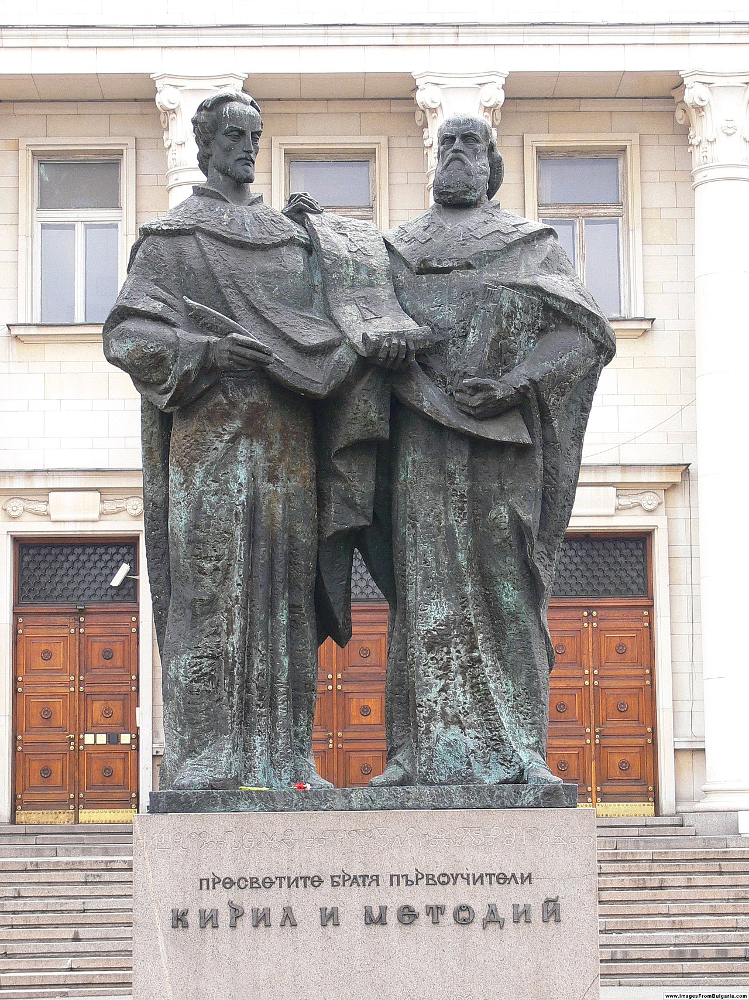

Въздигането на Кирил и Методий като равноапостоли и велики християнски учители става в България още с идването на техните ученици през 886 г. Свидетелства за честването на празника са открити в арменския летопис от 1813 г., където се споменава за честване на 22 май 1813 г. в Шумен. В съвременната историография се смята, че за първи път в епохата на Възраждането на 11 май 1851 г. в епархийското училище „Св. св. Кирил и Методий“ в гр. Пловдив по инициатива на Найден Геров се организира празник на Кирил и Методий – създатели на глаголицата. Денят 11 май не е случайно избран от Найден Геров – това е общият църковен празник на двамата светии. След въвеждането на Григорианския календар през 1916 г. празникът се чества на 24 май по официалния държавен календар, а по църковния литургичен календар този ден е на дата 11 май. През 1968 г. Българската православна църква, вече със статут на патриаршия, въвежда като литургичен календар т.нар. Новоюлиански календар, чрез който се премахва грешката на стария Юлиански календар. Така денят на Кирил и Методий се почита от църквата на 11 май по църковния календар. Но поради вече установената гражданска традиция светското, гражданското и държавно честване остава на 24 май.
